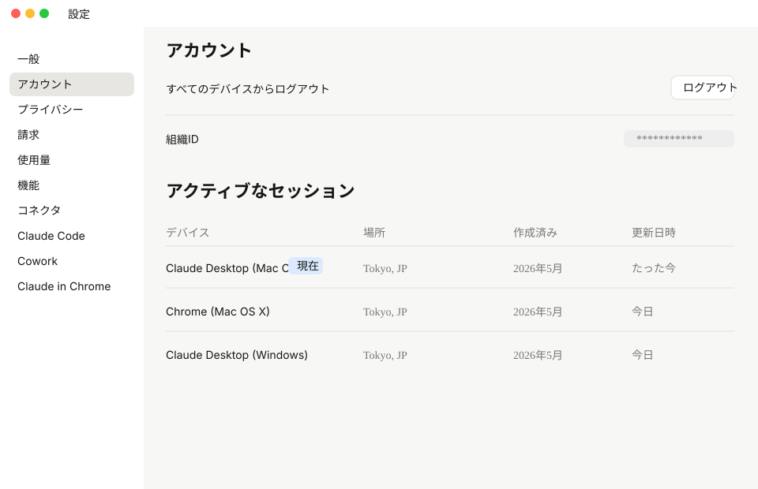
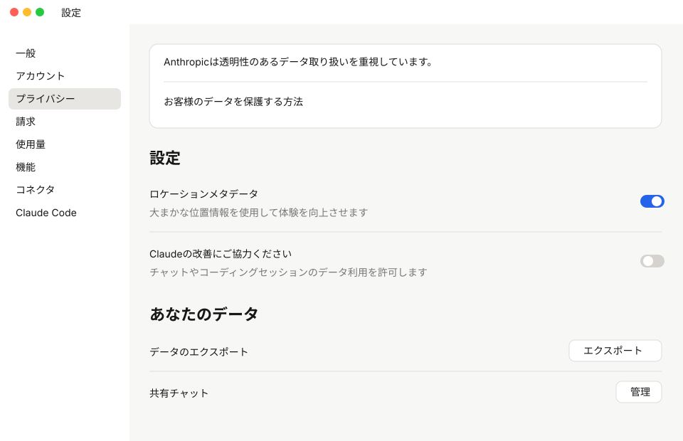
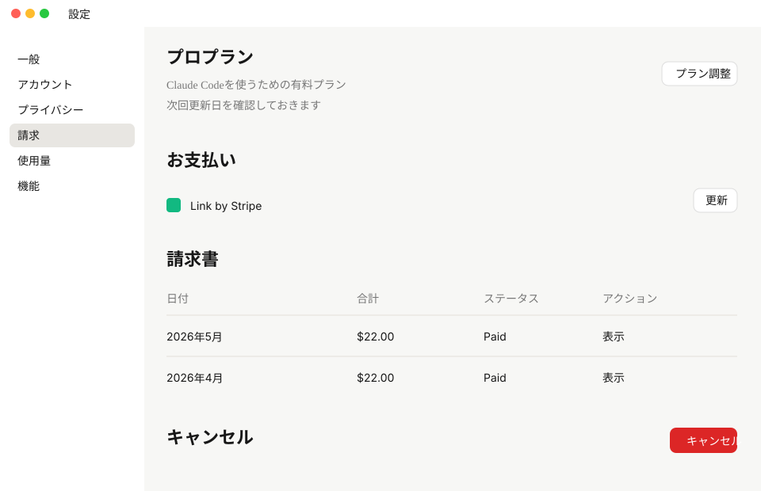
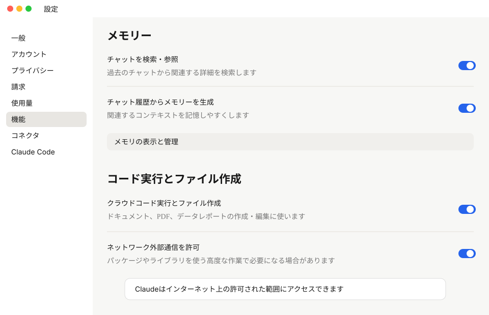
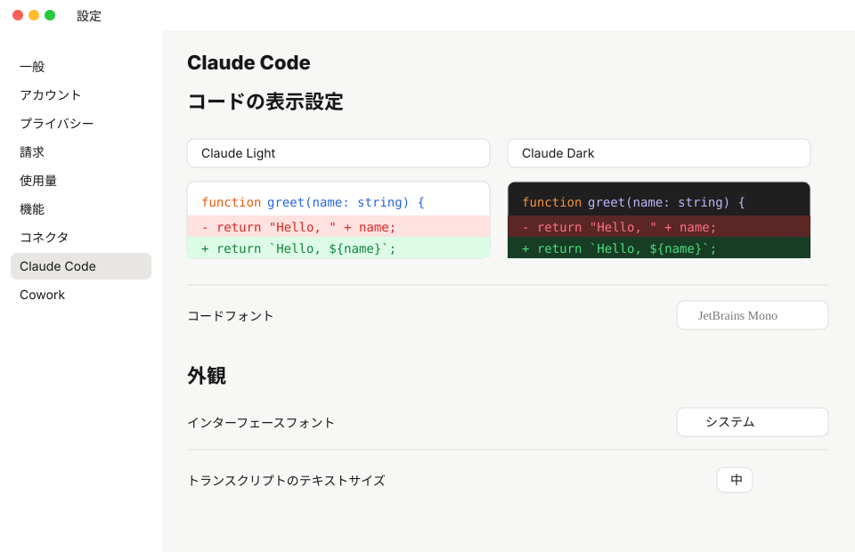
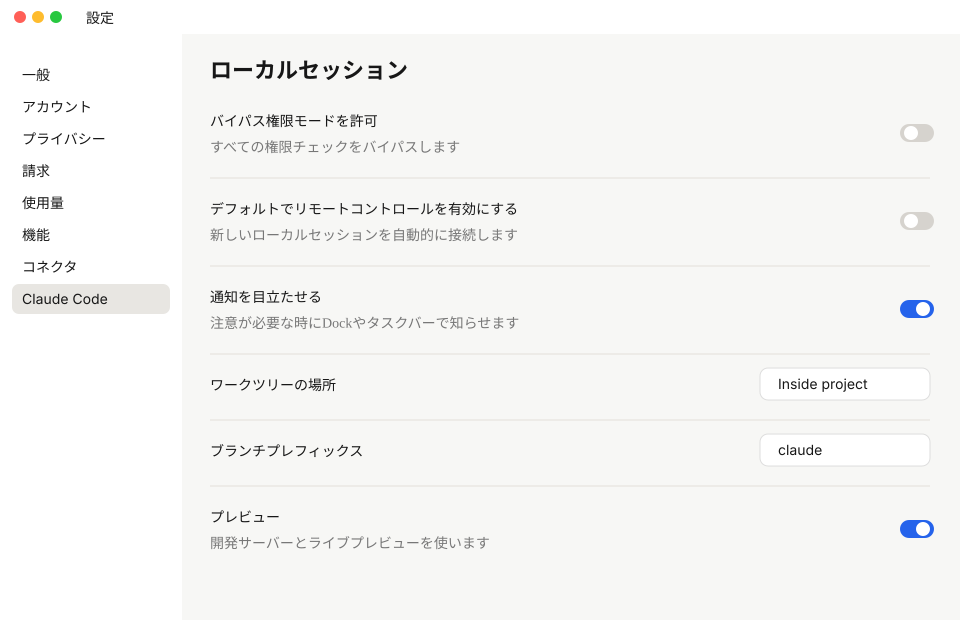
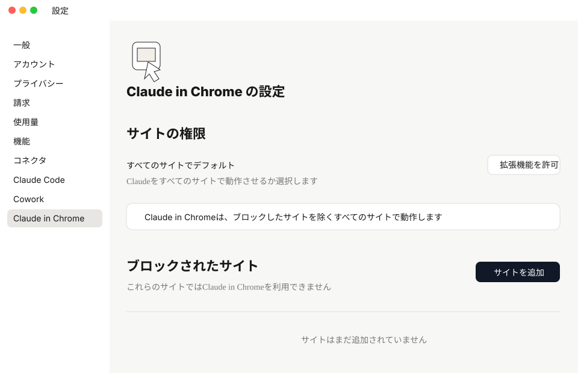

作業範囲を狭くできる
デスクトップ全体ではなく講座用フォルダを選ぶと、関係ないファイルを触る心配を減らせます。
最初に理解すること
Claude Codeは、作業対象として選んだフォルダを手がかりに動きます。
最初から大事なフォルダ全体を渡すのではなく、練習用の AI-X フォルダから始めると安心です。
デスクトップ全体ではなく講座用フォルダを選ぶと、関係ないファイルを触る心配を減らせます。
Claudeが作ったファイルや編集した内容を、あとから自分で確認しやすくなります。
最初はメモ作成やフォルダ説明だけ試せれば十分です。慣れてから実際の資料を入れます。
デスクトップに AI-X フォルダを作り、Claude Codeではこのフォルダを選びます。
AI-X/
├── 01_練習メモ/
├── 02_素材/
├── 03_Claudeに作ってもらうもの/
└── 99_完了/Chat / Cowork / Code
Claudeの中にも役割の違いがあります。迷ったら、相談はChat、資料や作業場所を持たせたい時はCowork、ファイルやコードまで扱う時はCode、と考えると分かりやすいです。
AI-X フォルダから始め、権限は確認しながら進める設定画面
Claudeデスクトップアプリの設定画面を、左メニューの上から順番に確認します。 変更が必要な項目だけを押さえ、分からない項目は無理にオン・オフを変えずに進めます。
プロフィール、見た目、通知を確認します。氏名や呼び名、Claudeへの指示は必要に応じて入力します。
Claudeへの指示は、ChatとCoworkで反映される基本方針です。講座準備では空欄でも問題ありません。
Code通知はオンのままで大丈夫です。長い作業が終わった時に気づきやすくなります。
ログイン中の端末を確認します。見覚えのない端末がある場合だけ、メニューからログアウトを検討します。
講座前は「現在」と表示されているClaude Desktopがあるか確認できれば十分です。

データの扱いと共有設定を確認します。Claudeの改善に協力は、チャットやコーディングセッションの内容をClaudeに学習させないため、基本的にはオフ推奨です。
データのエクスポート、共有チャット、記憶設定は、必要になってから使います。

契約中のプラン、支払い方法、請求書を確認します。Claude Codeを使う方は、有料プランになっていることを確認します。
講座用の案内では、年間ではなく月額で契約する前提です。プラン変更やキャンセルは誤操作しないように注意してください。

現在のセッション、週間制限、利用クレジットを確認します。講座前に上限近くまで使い切っていないかだけ見ておきます。
制限に近い場合は、リセット時間を待つか、当日の作業量を控えめにします。

メモリー、ツールアクセス、ビジュアル、コード実行とファイル作成を確認します。
ネットワーク外部通信やクラウドコード実行とファイル作成は便利ですが、何のために使うか分かる時だけオンにします。
初心者の方は、まず初期状態のまま進めて、必要になった時に講師の案内に沿って確認すれば大丈夫です。

設定のコネクタ画面では、カスタマイズに移動しましたという案内が表示されます。Google Drive、Notion、Slackなどの外部サービス連携は、Customize側で管理します。
講座準備では、一覧を確認できれば十分です。必要な連携だけ選んで、後から接続します。ツール権限は、最初は承認が必要にしておくと安心です。


スキルは、よく使う作業手順や専門的な進め方をClaudeに渡しておける機能です。
便利な自動化ですが、説明文とトリガーを読んで、内容が分かるものだけオンにします。講座準備では、まず場所を確認できれば大丈夫です。

コードのテーマ、フォント、表示サイズ、セッション状態の分類を確認します。見た目の好みなので、読みづらい時だけ変更します。
作業に直接関わる重要設定ではないため、最初はそのままで大丈夫です。

ここが一番大事です。Claude Codeがローカルのフォルダで作業する時の権限を確認します。
迷ったら、広い権限は渡さず、Claudeに「まず作業内容を説明して」と頼んでから進めます。

Chrome上でClaudeを使うための設定です。Webページを見ながら相談できる便利な機能なので、使える方は入れておくことをおすすめします。
銀行サイト、管理画面、個人情報を扱うページなど、Claudeにアクセスしてほしくないサイトは、サイトを追加からブロックしておきます。

一般的なデスクトップ設定では、起動、クイックアクセスショートカット、音声ショートカット、メニューバーを確認します。
コンピュータをスリープさせないは、Claudeに長めの作業を任せる時に便利です。講座準備ではオンになっているか確認しておきます。
音声ショートカットは、必要な方だけ使いやすいキーに設定します。使わない場合は「ショートカットなし」のままで大丈夫です。

ブラウザ使用は、ClaudeがChromeでWebサイトを閲覧・操作できる設定です。便利ですが、操作してほしくないサイトを開いていないか確認しながら使います。
コンピュータ使用は、Claudeが画面を見たり、キーボードやマウス操作を補助したりする強い機能です。必要な時だけ許可し、作業中は画面を確認しながら進めます。
Macではアクセシビリティや画面録画の許可が出ることがあります。表示に沿って進め、分からない場合はスクショを残します。

最後に確認
全部を完璧に変える必要はありません。ここまで確認できれば、講座前の準備としては十分です。
困った時
設定中に分からない表示やエラーが出た場合は、画面全体のスクリーンショットを撮って保存してください。どのメニューで止まったか分かると確認しやすくなります。